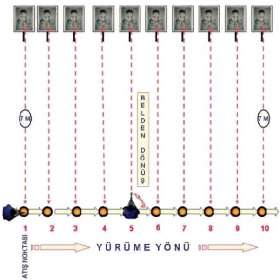
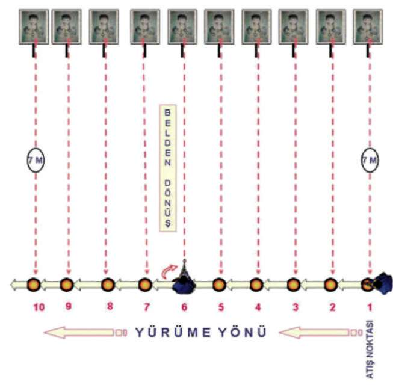
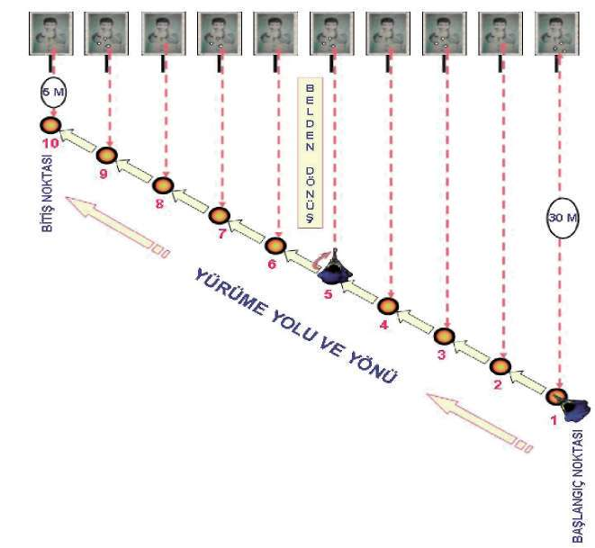
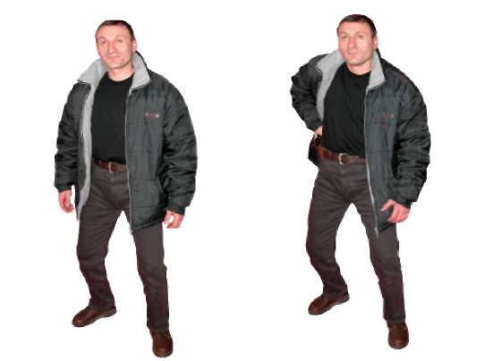
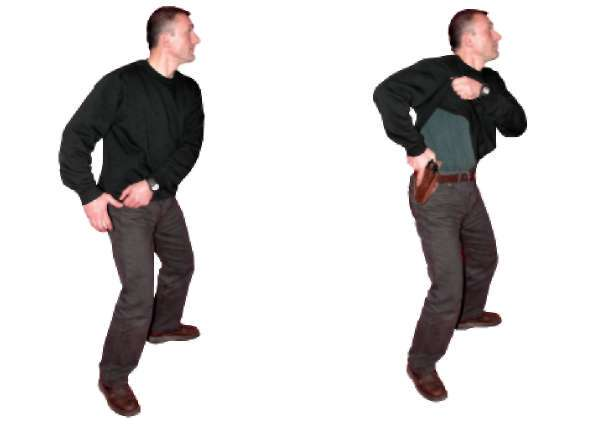

Şekil-8.a) İleri-Geri Yürürken Önden Çıkan Hedeflere Hareket Hâlinde Atış İstasyonu 84




BÖLÜM
İLERİ SEVİYE ATIŞ TEKNİKLERİ
Şekil-8.b) Hedeflere Paralel Yürürken Sağdan Çıkan Hedeflere Hareket Hâlinde Atış İstasyonu Şekil-8.c) Hedeflere Paralel Yürürken Soldan Çıkan Hedeflere Hareket Hâlinde Atış İstasyonu 85


Şekil-8.d) Hedeflere Çapraz Yürürken Sağdan Çıkan Hedeflere Hareket Hâlinde Atış İstasyonu Şekil-8.e) Hedeflere Çapraz Yürürken Soldan Çıkan Hedeflere Hareket Hâlinde Atış İstasyonu 86

BÖLÜM
İLERİ SEVİYE ATIŞ TEKNİKLERİ
1.8. SİVİL KIYAFETLERDEN YARI OTOMATİK TABANCAYI ÇEKME
VE KURARAK AKTİF HÂLE GETİRME TEKNİKLERİ
1.8.1. Palto vb. Kıyafetler
Palto ve benzeri kıyafetleri giyerek tabancanızı taşıyorsanız ve kullanma ihtimaliniz de varsa paltonuzun önünü açık bulundurmanız gerekmektedir.
Tabancayı kılıf veya kılıfsız olarak belinizden alırken, hangi tarafta taşıdığınız ve hangi elinizle alacağınız önemlidir. Tabancayı kullandığınız el tarafında taşıyorsanız, aynı elinizle silahı örten paltonun tarafına hızlı vurarak geriye doğru atın. Eşzamanlı olarak aynı elinizle tabancayı çekip kurma tekniğini uygulayarak aktif hâle getirin. Tabancayı kullandığınız el ile tabancayı bulundurduğunuz yer farklı tarafta ise tabancayı pasif olarak kullandığınız elinizle tabancayı örten paltonun tarafına geriye doğru hızlı vurarak ve diğer elinizle tabancayı çekip kurma tekniğini uygulayarak aktif duruma getirin. (Bakınız Resim-11.a) 1. Hareket
2. Hareket
3. Hareket 4. Hareket
Resim-11.a) Palto vb. kıyafetlerden Yarı Otomatik Tabancayı Çekme Tekniği 87

1.8.2. Kazak, Tişört, Gömlek vb. Kıyafetler Öncelikle bu kıyafetlerle tabancanın saklanması veya örtünülmesi hâlinde tekniğin uygulanabileceği bilinmelidir. Bu durumda tabancayı aktif olarak kullandığınız el ile tabancayı bulundurduğunuz yer doğru orantılı ise tabancayı pasif kullandığınız elinizle kazak, gömlek veya tişörtünüzün tabancayı örten kısmından tutarak hızlı şekilde yukarıya koltuk altına doğru çekin. Diğer aktif elinizle tabancanızı çekip kurma tekniğini uygulayarak aktif hâle getirin. Tabancayı aktif olarak kullandığınız el ile tabancanın bulunduğu yer ters orantılı ise yine tabancayı pasif kullandığınız elinizle, tabancayı örten kıyafetin kısmından tutarak koltuk altına doğru çekin. Eşzamanlı olarak tabancayı aktif kullandığınız elinizle tabancayı çekip kurma tekniğini uygulayarak aktif duruma getirin. (Bakınız Resim-11.b, 11.c.1, 11.c.2, 11.c.3.) 1. Hareket
2. Hareket